La distribución normal, también conocida como distribución gaussiana o campana de Gauss, es la distribución de probabilidad continua más importante en la estadística.
Su importancia radica en que muchos fenómenos naturales, sociales y económicos siguen este patrón.
La distribución normal es la distribución de probabilidad continua más usada en estadística y una herramienta fundamental para modelar una inmensa variedad de fenómenos en las ciencias, la ingeniería y la economía. Su popularidad se debe a una propiedad matemática conocida como el Teorema del Límite Central, que establece que la suma o el promedio de un gran número de variables aleatorias independientes (sin importar su distribución original) tiende a seguir una distribución normal.
Características Clave
La distribución normal es un tipo de distribución de probabilidad continua. Esto significa que la variable aleatoria puede tomar cualquier valor dentro de un rango determinado. Se representa por una curva simétrica en forma de campana, donde la mayor parte de los datos se agrupan alrededor del valor central.
Forma de Campana: La distribución es simétrica alrededor de su media, creando una curva con forma de campana. El punto más alto de la campana es la media.
Media, Mediana y Moda Coincidentes: En una distribución normal perfecta, estos tres valores son iguales y se encuentran en el centro de la curva.
Asintótica al Eje Horizontal: La curva se extiende indefinidamente en ambas direcciones, acercándose al eje x pero sin llegar a tocarlo.
Regla Empírica: Alrededor del 68% de los datos se encuentran dentro de una desviación estándar de la media (μ±σ), el 95% dentro de dos desviaciones estándar (μ±2σ), y el 99.7% dentro de tres desviaciones estándar (μ±3σ).
Parámetros
La distribución normal está completamente definida por dos parámetros:
Media (μ): Indica la ubicación del centro de la curva y el valor más probable.
Varianza(\sigma^2) o Desviación Estándar (σ): Mide la dispersión o variabilidad de los datos. Una σ grande resulta en una curva más ancha y aplanada, mientras que una σ pequeña crea una curva más estrecha y alta.
Fórmulas
La fórmula principal de la distribución normal es la función de densidad de probabilidad (FDP). Esta función no calcula la probabilidad de un punto exacto, sino la densidad de probabilidad en ese punto.
e es el número de Euler (aproximadamente 2.71828).
π es la constante pi (aproximadamente 3.14159).
Para calcular probabilidades, se utiliza la distribución normal estándar, que tiene una media de 0 y una desviación estándar de 1. Cualquier variable normal puede estandarizarse usando la siguiente fórmula:
Fórmula de Estandarización (puntuación Z):
Z = \frac{X - \mu}{\sigma}
La puntuación Z nos dice cuántas desviaciones estándar está un valor dado de la media. Luego, se usan tablas o software estadístico para encontrar las probabilidades correspondientes.
Ejercicios
Ejercicio 1
En una alcaldía municipal, el tiempo de atención a los ciudadanos para trámites de licencias tiene una distribución normal con media de 25 minutos y desviación estándar de 4 minutos.
Se desea calcular la probabilidad de que un ciudadano sea atendido en menos de 30 minutos.
La probabilidad de que un ciudadano sea atendido en menos de 30 minutos es del 89.44%.
Ver código
media <-25desviacion_estandar <-4limite_x <-30rango <-c(media -3.5* desviacion_estandar, media +3.5* desviacion_estandar)ggplot(data.frame(x = rango), aes(x = x)) +# Curva de la distribución normalstat_function(fun = dnorm, args =list(mean = media, sd = desviacion_estandar), n =500, color ="black", size =1) +# Resaltar el área de interés (X < 30)geom_area(stat ="function", fun = dnorm, args =list(mean = media, sd = desviacion_estandar),fill ="palegreen", xlim =c(rango[1], limite_x), alpha =0.5) +# Etiquetas y títuloslabs(title ="Distribución Normal: Atención Ciudadana", subtitle ="Probabilidad de atención en menos de 30 minutos", x ="Tiempo de atención (minutos)", y ="Densidad de Probabilidad") +theme_bw() +# Línea para el valor de 30geom_vline(xintercept = limite_x, linetype ="dashed", color ="green") +geom_text(aes(x = limite_x, y =0.02, label ="30 min"), hjust =1.1, vjust =-1, color ="black")
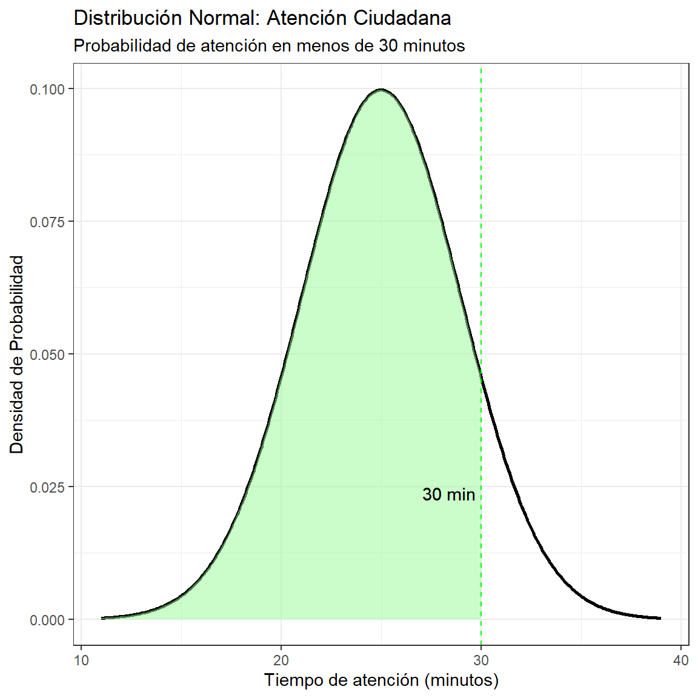
La gráfica muestra una campana de Gauss centrada en la media de 25 minutos. El área sombreada en naranja representa la probabilidad acumulada de que el tiempo de atención sea cualquier valor inferior a 30 minutos.
Al observar que el límite de 30 minutos se encuentra a la derecha de la media (exactamente a 1.25 desviaciones estándar, ya que Z = \frac{30-25}{4} = 1.25), es lógico que el área sombreada cubra la gran mayoría de la curva (89.44%).
Esto indica que es un evento muy probable y que solo una pequeña fracción de los ciudadanos (10.56%) experimentará tiempos de espera superiores a la marca roja de los 30 minutos.
Ejercicio 2
El número de solicitudes diarias recibidas en una oficina de atención ciudadana sigue una distribución normal con media de 120 solicitudes y desviación estándar de 15 solicitudes.
¿Cuál es la probabilidad de que en un día se reciban más de 140 solicitudes?
# Calculamos P(X > 140)# Usamos lower.tail = FALSE para obtener el área a la derechaprob_mas_de_140 <-pnorm(140, mean = media, sd = desviacion_estandar, lower.tail =FALSE)cat("La probabilidad es:", round(prob_mas_de_140, 4), "\n")
La probabilidad es: 0.0912
La probabilidad de que en un día se reciban más de 140 solicitudes es del 9.12%.
Ver código
media <-120desviacion_estandar <-15limite_x <-140rango <-c(media -3.5* desviacion_estandar, media +3.5* desviacion_estandar)ggplot(data.frame(x = rango), aes(x = x)) +# Curva de la distribución normalstat_function(fun = dnorm, args =list(mean = media, sd = desviacion_estandar), n =500, color ="black", linewidth =1) +# Resaltar el área de interés (X > 140)geom_area(stat ="function", fun = dnorm, args =list(mean = media, sd = desviacion_estandar),fill ="gold", xlim =c(limite_x, rango[2]), alpha =0.5) +# Etiquetas y títuloslabs(title ="Distribución Normal: Solicitudes Diarias", subtitle ="Probabilidad de recibir más de 140 solicitudes", x ="Número de solicitudes", y ="Densidad de Probabilidad") +theme_bw() +# Línea para el valor de 140geom_vline(xintercept = limite_x, linetype ="dashed", color ="red") +annotate("text", x = limite_x, y =0.005, label ="140 solicitudes", hjust =-0.1, vjust =-1, color ="Black")
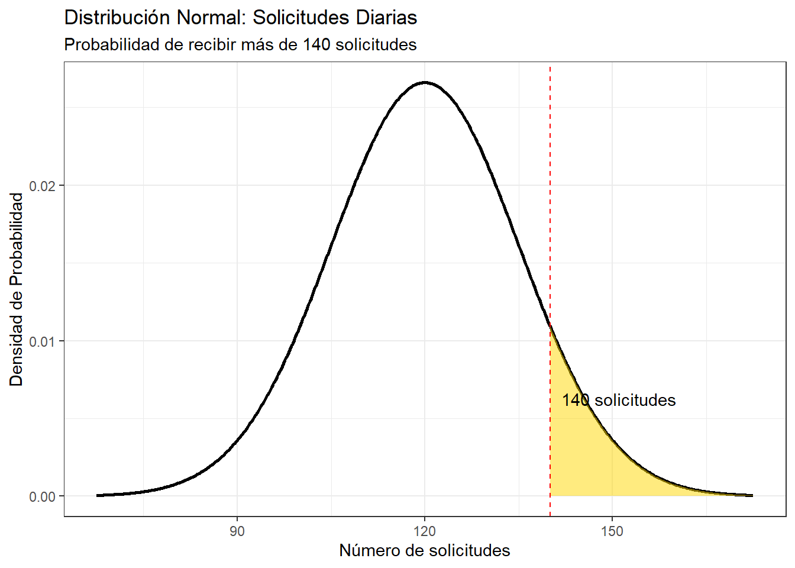
La gráfica presenta una distribución centrada en 120 solicitudes. En este caso, el área de interés se encuentra en la cola derecha de la distribución, partiendo desde el valor crítico de 140.
Dado que 140 está a más de una desviación estándar de la media (Z = \frac{140-120}{15} \approx 1.33), el área sombreada es pequeña. Esto nos indica que recibir más de 140 solicitudes no es el escenario cotidiano; sucede aproximadamente solo el 9.12% de los días.
La mayor parte de la probabilidad (el área blanca bajo la curva) se concentra entre 105 y 135 solicitudes.
Ejercicio 3
El puntaje obtenido por funcionarios públicos en una evaluación de desempeño sigue una distribución normal con media de 75 puntos y desviación estándar de 8 puntos.
Se desea calcular la probabilidad de que un funcionario obtenga entre 70 y 85 puntos.
# Calculamos P(70 < X < 85)# Es igual a P(X < 85) - P(X < 70)prob_85 <-pnorm(85, mean = media, sd = desviacion_estandar)prob_70 <-pnorm(70, mean = media, sd = desviacion_estandar)prob_entre_70_85 <- prob_85 - prob_70cat("La probabilidad es:", round(prob_entre_70_85, 4), "\n")
La probabilidad es: 0.6284
La probabilidad de que un funcionario obtenga un puntaje entre 70 y 85 puntos es del 62.84%.
Ver código
media <-75desviacion_estandar <-8limite_inf <-70limite_sup <-85rango <-c(media -3.5* desviacion_estandar, media +3.5* desviacion_estandar)ggplot(data.frame(x = rango), aes(x = x)) +# Curva de la distribución normalstat_function(fun = dnorm, args =list(mean = media, sd = desviacion_estandar), n =500, color ="black", linewidth =1) +# Resaltar el área entre 70 y 85geom_area(stat ="function", fun = dnorm, args =list(mean = media, sd = desviacion_estandar),fill ="springgreen", xlim =c(limite_inf, limite_sup), alpha =0.5) +# Etiquetas y títuloslabs(title ="Distribución Normal: Evaluación de Desempeño", subtitle ="Probabilidad de puntaje entre 70 y 85 puntos", x ="Puntaje obtenido", y ="Densidad de Probabilidad") +theme_bw() +# Líneas para los límitesgeom_vline(xintercept =c(limite_inf, limite_sup), linetype ="dashed", color ="black") +annotate("text", x = limite_inf, y =0.01, label ="70 pts", hjust =1.1, color ="black") +annotate("text", x = limite_sup, y =0.01, label ="85 pts", hjust =-0.1, color ="black")
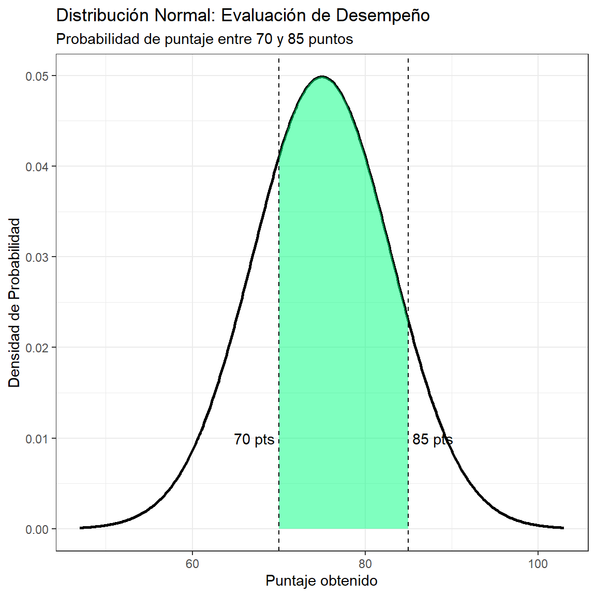
La gráfica muestra la distribución de los puntajes centrada en 75 puntos. El área sombreada representa la probabilidad de caer dentro del rango de “desempeño esperado” (entre 70 y 85).
Desde la perspectiva de la estandarización, el límite inferior está a -0.625 desviaciones estándar y el superior a +1.25. Al cubrir la zona central y parte de la cola derecha, el área sombreada captura más de la mitad de la población (62.84%).
Esto indica que la mayoría de los funcionarios se encuentran en este intervalo de calificación media-alta.
Ejercicio 3 Parte B
Determinar el puntaje mínimo que debe obtener un funcionario para estar en el 90% superior de desempeño.
Parámetros
Ver código
media <-75desviacion_estandar <-8probabilidad_acumulada <-0.10# 90% superior implica dejar el 10% a la izquierda
# Usamos qnorm para hallar el valor de X (puntaje)# qnorm trabaja con el área a la izquierda por defectopuntaje_minimo <-qnorm(probabilidad_acumulada, mean = media, sd = desviacion_estandar)cat("El puntaje mínimo es:", round(puntaje_minimo, 2), "puntos \n")
El puntaje mínimo es: 64.75 puntos
Para pertenecer al 90% superior de desempeño, un funcionario debe obtener al menos 64.75 puntos.
Ver código
media <-75desviacion_estandar <-8puntaje_x <-64.75rango <-c(media -3.5* desviacion_estandar, media +3.5* desviacion_estandar)ggplot(data.frame(x = rango), aes(x = x)) +# Curva de la distribución normalstat_function(fun = dnorm, args =list(mean = media, sd = desviacion_estandar), n =500, color ="black", linewidth =1) +# Resaltar el 90% superior (área a la derecha de 64.75)geom_area(stat ="function", fun = dnorm, args =list(mean = media, sd = desviacion_estandar),fill ="turquoise", xlim =c(puntaje_x, rango[2]), alpha =0.5) +# Etiquetas y títuloslabs(title ="Distribución Normal: Percentiles de Desempeño", subtitle ="Puntaje mínimo para el 90% superior (Área naranja)", x ="Puntaje obtenido", y ="Densidad de Probabilidad") +theme_bw() +# Línea para el puntaje halladogeom_vline(xintercept = puntaje_x, linetype ="dashed", color ="azure") +annotate("text", x = puntaje_x, y =0.005, label ="64.75 pts", hjust =1.1, color ="black")
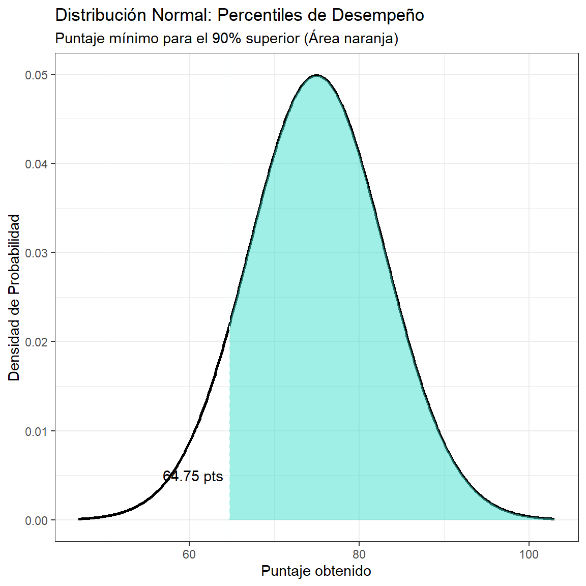
La gráfica ilustra que para estar en el 90% superior (representado por toda el área naranja), el funcionario debe superar el umbral de los 64.75 puntos.
Este valor se encuentra a la izquierda de la media de 75 puntos. Matemáticamente, esto corresponde a una puntuación Z \approx -1.28.
El hecho de que el área naranja sea tan extensa confirma que la gran mayoría de la población evaluada (9 de cada 10 funcionarios) alcanza este nivel mínimo de desempeño, dejando solo un 10% de los casos (el área blanca a la izquierda) por debajo de este estándar.
3 .Distribución Ji-Cuadrado \chi^2
La distribución ji-cuadrado \chi^2 es una distribución de probabilidad continua definida solo para valores positivos, que surge de la suma de los cuadrados de variables normales estándar independientes, dependiendo de un parámetro llamado grados de libertad (𝑘).
Su media es 𝑘, su varianza 2𝑘 y su forma varía según 𝑘: es muy asimétrica para valores pequeños y se aproxima a una normal al crecer. Su función de densidad se expresa mediante la función gamma, y es fundamental en estadística porque se utiliza en pruebas de hipótesis (bondad de ajuste e independencia en tablas de contingencia), en la construcción de intervalos de confianza para varianzas y en la base de otras distribuciones como la t de Student y la F de Fisher.
En términos intuitivos, mide la dispersión total al sumar cuadrados de desviaciones de normales, por lo que resulta clave para analizar varianzas y asociaciones entre variables.
Parámetros y Características
A diferencia de la distribución normal, la distribución ji cuadrado no está definida por una media y una desviación estándar, sino por un único parámetro:
Grados de libertad (v o df): Este parámetro determina la forma de la distribución. A medida que los grados de libertad aumentan, la forma de la distribución se vuelve más simétrica y se aproxima a una distribución normal.
Valores No Negativos: La variable ji cuadrado solo puede tomar valores positivos, ya que se calcula a partir de la suma de cuadrados. Por lo tanto, su curva comienza en cero y se extiende hacia la derecha.
Asimétrica a la Derecha: La distribución es asimétrica con una cola larga hacia la derecha.
Media y Varianza: La media de la distribución es igual a los grados de libertad (μ=v), y la varianza es el doble de los grados de libertad (\sigma^2=2v)
La \chi^2 es fundamental en estadística inferencial.
Algunos de sus usos:
Pruebas de hipótesis:
Chi-cuadrado de bondad de ajuste: verificar si los datos observados se ajustan a una distribución teórica.
Chi-cuadrado de independencia: evaluar si dos variables categóricas son independientes en una tabla de contingencia.
Intervalos de confianza: para la varianza poblacional de una normal, ya que está relacionada con la suma de cuadrados de normales.
Modelos más complejos: forma parte de la familia de distribuciones asociadas a la F de Fisher y la t de Student, que también dependen de \chi^2.
Familias de Curvas Chi Cuadrado
Ver código
k_vals <-c(4, 5, 10)x <-seq(0, 40, length.out =1000)df <-data.frame()for (k in k_vals) { df <-rbind(df, data.frame( x = x, dens =dchisq(x, df = k), k =factor(k) ))}ggplot(df, aes(x = x, y = dens, color = k)) +geom_line(size =1.6) +labs( title ="Familia de curvas χ²", subtitle ="Densidades para distintos grados de libertad", x ="x",y ="Densidad", color ="Grados de libertad (k)" ) +theme_minimal(base_size =18)
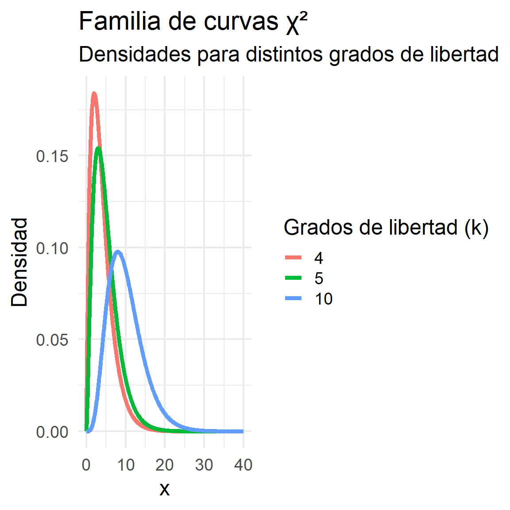
Ejercicios
Ejercicio 1
Para una distribución chi-cuadrada encuentre:
\chi^2_{0.02} cuando v = 18.
\chi^2_{0.10} cuando v = 9.
\chi^2_{0.05} cuando v = 30
Solución Incisos
Ver código
# Calculamos los valores que dejan el área alpha a la derechaa <-qchisq(0.02, df =18, lower.tail =FALSE)b <-qchisq(0.10, df =9, lower.tail =FALSE)c <-qchisq(0.05, df =30, lower.tail =FALSE)# Mostrar resultados en consolacat("Valores hallados:\n")
# Definimos la función siguiendo tu esquemagrafico_chi <-function(df, alpha, critico, titulo){# Definimos el rango del eje X basándonos en los grados de libertad x <-seq(0, max(critico +10, df +30), length.out =500) dens <-dchisq(x, df) data <-data.frame(x = x, y = dens)ggplot(data, aes(x = x, y = y)) +# Curva de densidadgeom_line(color ="mediumturquoise", linewidth =1.2) +# Sombreado del área a la derecha (alpha)geom_area(data =subset(data, x >= critico), aes(x = x, y = y), fill ="greenyellow", alpha =0.5) +# Línea vertical del valor críticogeom_vline(xintercept = critico, linetype ="dashed", color ="greenyellow") +# Títulos y etiquetaslabs(title = titulo, subtitle =paste0("df = ", df, " , alpha = ", alpha, " , crítico = ", round(critico, 2)),x ="x", y ="Densidad") +theme_minimal()}
Ver código
g1 <-grafico_chi(df =18, alpha =0.02, critico = a, titulo ="Distribución Chi-cuadrado (a)")g1
Para una distribución chi-cuadrada encuentre \chi^2_{\alpha} tal que:
P(X^2 > \chi^2_{\alpha}) = 0.97 cuando v = 6.
P(X^2 > \chi^2_{\alpha}) = 0.01 cuando v = 22.
P(42.980 < X^2 < \chi^2_{\alpha}) = 0.035 cuando v = 28
Solución Incisos
Ver código
# a. P(X^2 > critico) = 0.97 con v = 6a_new <-qchisq(0.97, df =6, lower.tail =FALSE)# b. P(X^2 > critico) = 0.01 con v = 22b_new <-qchisq(0.01, df =22, lower.tail =FALSE)# c. P(42.980 < X^2 < critico) = 0.035 con v = 28p_base <-pchisq(42.980, df =28)p_objetivo <- p_base +0.035# AJUSTE: Si p_objetivo llega a 1, usamos un valor casi total para que no de errorif(p_objetivo >=1) { c_new <-qchisq(0.9999, df =28)} else { c_new <-qchisq(p_objetivo, df =28)}# Mostrar resultados corregidos (Asegurando que los nombres coincidan)cat("Resultados Ejercicio 2:\n")
# Reutilizamos tu función grafico_chigrafico_chi(df =6, alpha =0.97, critico = a_new, titulo ="Chi-cuadrado Ej 2 (a)")
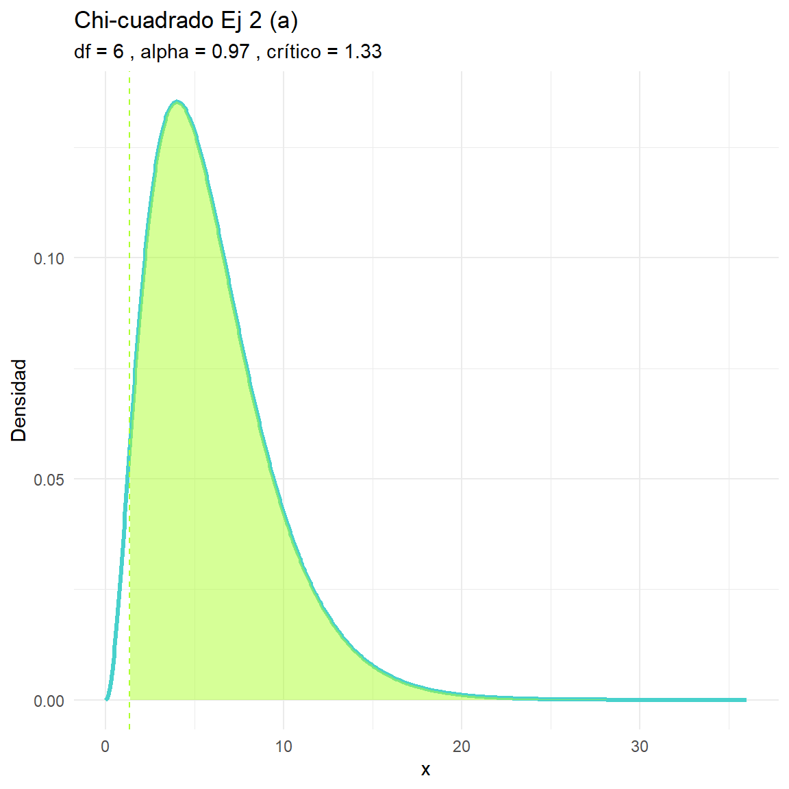
Ver código
grafico_chi(df =22, alpha =0.01, critico = b_new, titulo ="Chi-cuadrado Ej 2 (b)")
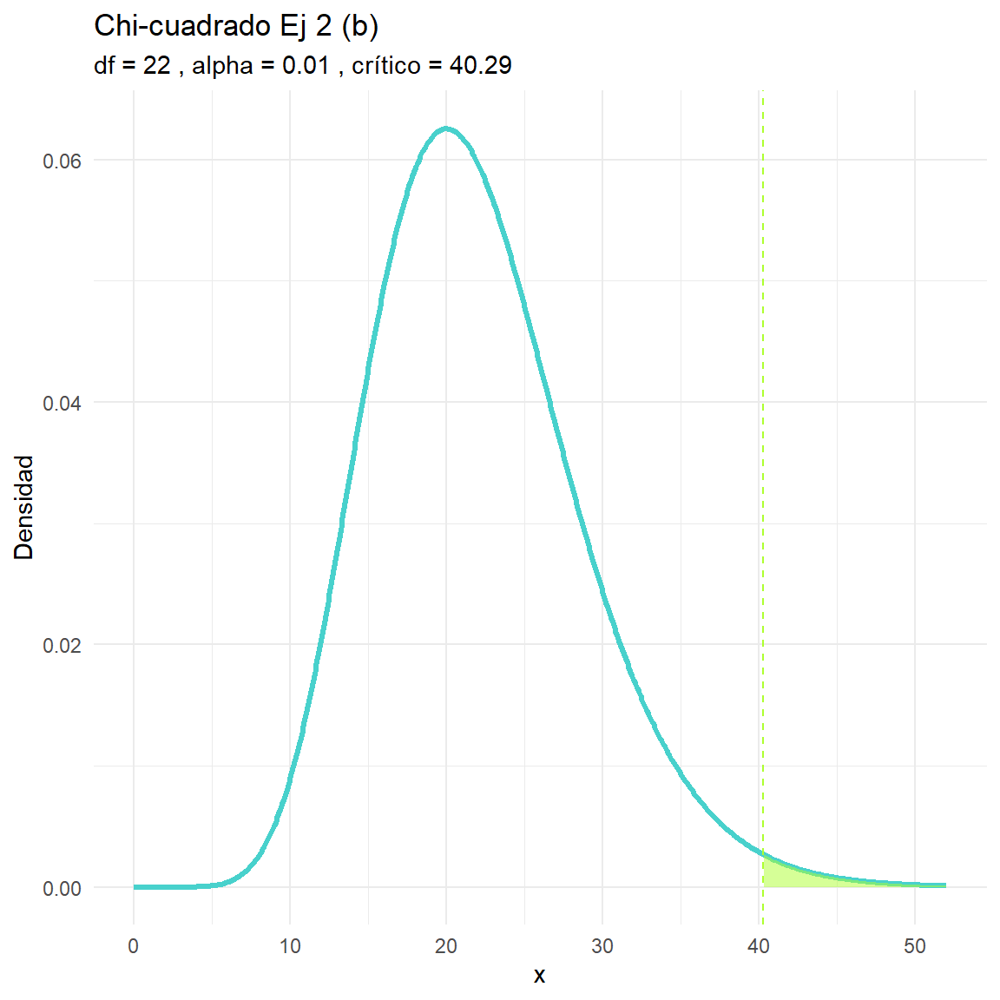
Ver código
# Para la gráfica c, sombrearemos el área específica entre los dos valoresx_c <-seq(0, 60, 0.1)dens_c <-dchisq(x_c, df =28)data_c <-data.frame(x = x_c, y = dens_c)ggplot(data_c, aes(x = x, y = y)) +geom_line(color ="mediumturquoise", linewidth =1.2) +geom_area(data =subset(data_c, x >=42.980& x <= c_new), fill ="gold", alpha =0.5) +geom_vline(xintercept =c(42.980, c_new), linetype ="dashed", color ="yellowgreen") +labs(title ="Chi-cuadrado Ej 2 (c)", subtitle ="Área entre 42.980 y el valor crítico hallado",x ="x", y ="Densidad") +theme_minimal()
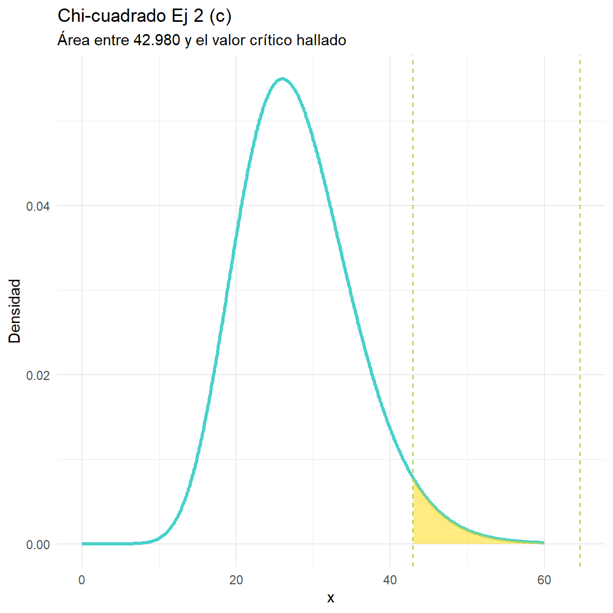
4 .Distribución T Student
La distribución t de Student es una distribución de probabilidad continua que surge al estimar la media de una población normalmente distribuida cuando el tamaño de la muestra es pequeño y la varianza poblacional es desconocida. Fue introducida en 1908 por William Sealy Gosset bajo el seudónimo de “Student”.
Definición Matemática:
Si Z es una variable aleatoria con distribución normal estándar N(0,1) y V es una variable con distribución chi-cuadrado con v grados de libertad, independientes entre sí, entonces la variable T sigue una distribución t con v grados de libertad:
T = \frac{Z}{\sqrt{V/v}}
Características:
Forma:Es simétrica respecto al cero, similar a la normal estándar, pero con colas más pesadas (mayor probabilidad en los extremos).
Parámetro: Depende de los grados de libertad (v); a mayor v, la distribución se aproxima a la normal estándar N(0,1).
Media: E(T) = 0 (para v > 1).
Varianza: Var(T) = \frac{v}{v-2} (para v > 2).
Usos principales en la estadística
Pruebas de hipótesis: Comparación de medias cuando las muestras son pequeñas.
Intervalos de confianza: Estimación de la media poblacional con varianza desconocida.
Modelado de incertidumbre: Ideal para situaciones con datos limitados.
Familia de Curvas para T de Student
Ver código
set.seed(123)dfs <-c(3, 5, 10) # grados de libertad a mostrarx_range <-seq(-5, 5, by =0.01)df_t <-expand_grid(x = x_range, df = dfs) |>mutate(dens =dt(x, df))ggplot(df_t, aes(x = x, y = dens, color =factor(df), group = df)) +geom_line(size =1) +labs( title ="Familia de curvas t-Student", subtitle ="Diferentes grados de libertad (df)", x ="x",y ="Densidad", color ="df" ) +theme_minimal(base_size =12)
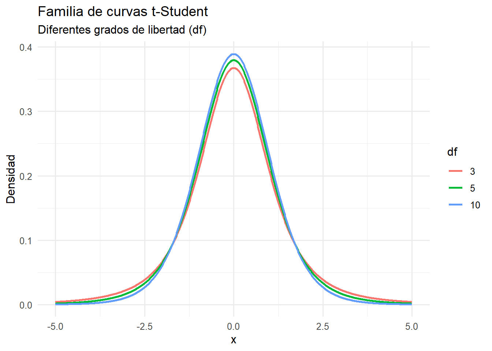
Ejercicios 3
Encuentre las siguientes probabilidades utilizando la distribución t de Student:
P(T < 1.895) cuando v = 10.
P(T > 1.742) cuando v = 20.
P(-1.645 < T < 2.315) cuando v = 15.
P(T > -1.985) cuando v = 14.
Solución de Incisos
Ver código
# 1. Realizamos los cálculos nuevamente para asegurar la precisiónprob_a <-pt(1.895, df =10)prob_b <-pt(1.742, df =20, lower.tail =FALSE)prob_c <-pt(2.315, df =15) -pt(-1.645, df =15)prob_d <-pt(-1.985, df =14, lower.tail =FALSE)# 2. Creamos un data frame organizadotabla_t <-data.frame(Inciso =c("a", "b", "c", "d"),Probabilidad_Solicitada =c("P(T < 1.895)", "P(T > 1.742)", "P(-1.645 < T < 2.315)", "P(T > -1.985)" ),Grados_Libertad =c(10, 20, 15, 14),Resultado_Decimal =round(c(prob_a, prob_b, prob_c, prob_d), 4),Resultado_Porcentaje =paste0(round(c(prob_a, prob_b, prob_c, prob_d) *100, 2), "%"))# 3. Generamos la tabla con formato profesionaltabla_t %>%kbl(caption ="Resumen de Probabilidades: Distribución t de Student",align ="c",col.names =c("Inciso", "Probabilidad", "v (df)", "Valor Decimal", "Porcentaje (%)")) %>%kable_styling(bootstrap_options =c("striped", "hover", "condensed", "responsive"),full_width = F,position ="center") %>%column_spec(1, bold = T, border_right = T) %>%column_spec(4, bold = T, color ="white", background ="#09363d")
Resumen de Probabilidades: Distribución t de Student
plot_t_final(df =10, region ="left", value1 =1.895, prob_val = t_a, title ="Inciso A")
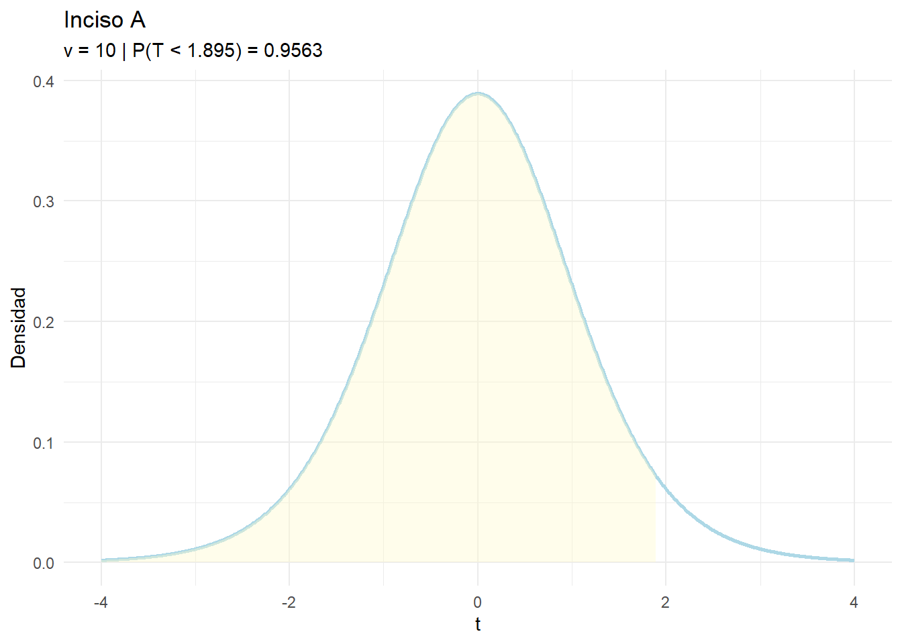
Ver código
plot_t_final(df =20, region ="right", value1 =1.742, prob_val = t_b, title ="Inciso B")
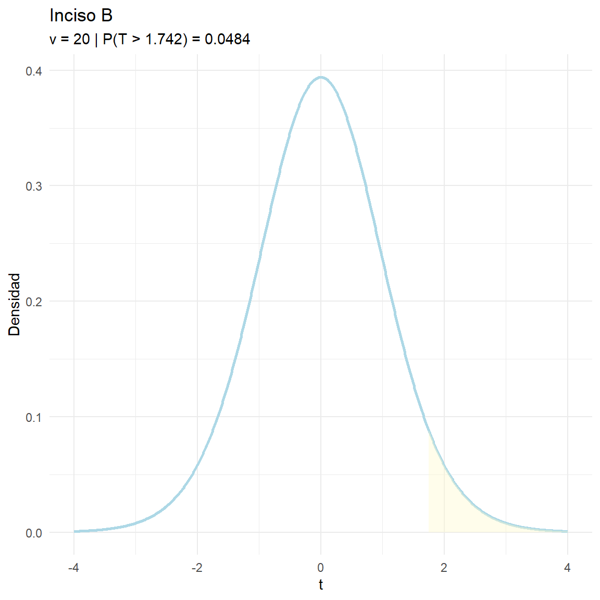
Ver código
plot_t_final(df =15, region ="between", value1 =-1.645, value2 =2.315, prob_val = t_c, title ="Inciso C")
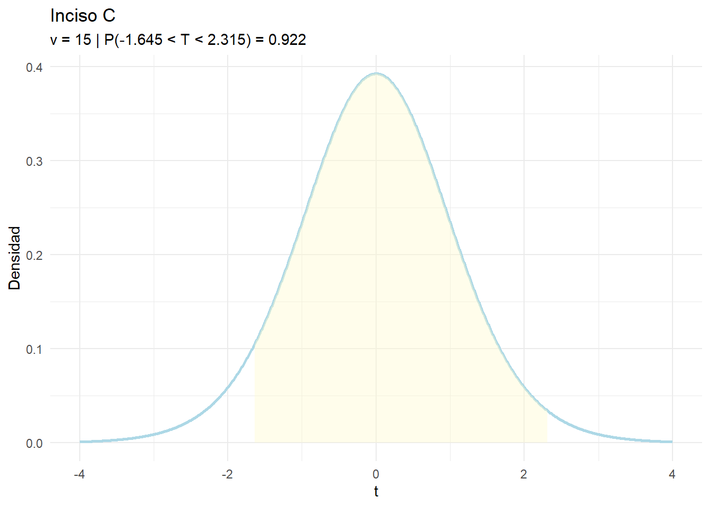
Ver código
plot_t_final(df =14, region ="right", value1 =-1.985, prob_val = t_d, title ="Inciso D")
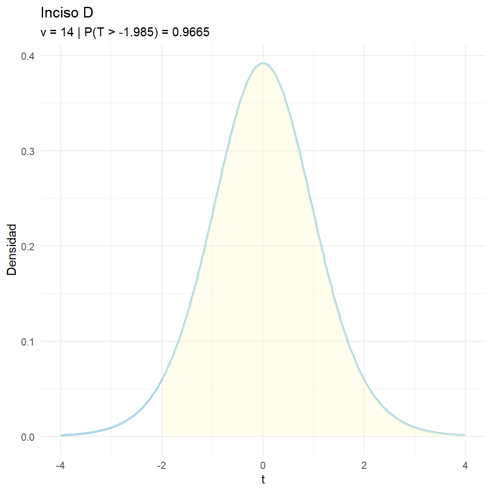
Ejercicio 4
En este ejercicio, dada una muestra de tamaño n=30, trabajamos con v = 29 grados de libertad.
Cuando trabajas con muestras pequeñas (generalmente n < 30 o 30) y no conoces la desviación estándar de la población, se debe utilizar la t de Student.
Aquí las razones técnicas por las que es t-Student:Tamaño de la muestra (n=30):
Al ser una muestra de 30, se calculan los grados de libertad como v = n - 1 = 29.
Valores de referencia: Si te fijas en los números que da el ejercicio (como 1.725 o 2.415), estos son valores típicos que se encuentran en la tabla de la t de Student para 29 grados de libertad.
Código
Ver código
v_df <-29# a. P(-1.725 < T < k) = 0.945# P(T < k) = 0.945 + P(T < -1.725)p_inf_a <-pt(-1.725, df = v_df)k_a <-qt(0.945+ p_inf_a, df = v_df)# b. P(k < T < 2.415) = 0.085# P(T < k) = P(T < 2.415) - 0.085p_sup_b <-pt(2.415, df = v_df)k_b <-qt(p_sup_b -0.085, df = v_df)# c. P(-k < T < k) = 0.92# Esto implica que queda (1 - 0.92) / 2 = 0.04 en cada cola.# El área acumulada hasta k es 0.92 + 0.04 = 0.96k_c <-qt(0.96, df = v_df)# Mostrar resultadoscat("Resultados Ejercicio 4:\n")
plot_t_final(df = v_df, region ="between", value1 =-1.725, value2 = k_a, prob_val =0.945, title ="Ejercicio 4 - Inciso A")
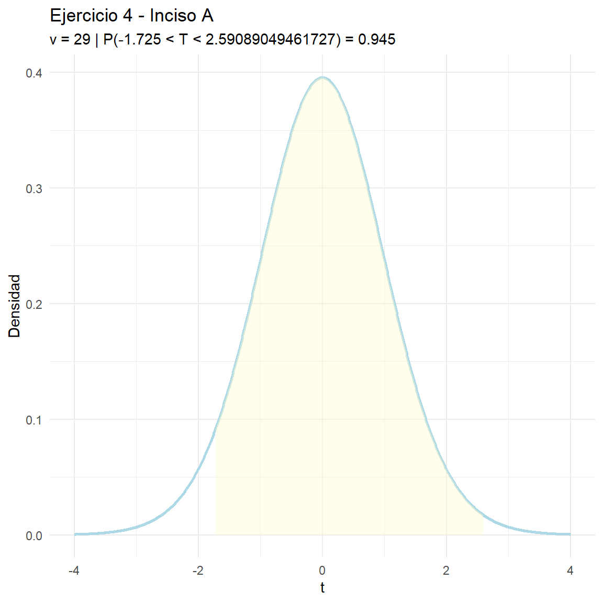
Ver código
plot_t_final(df = v_df, region ="between", value1 = k_b, value2 =2.415, prob_val =0.085, title ="Ejercicio 4 - Inciso B")
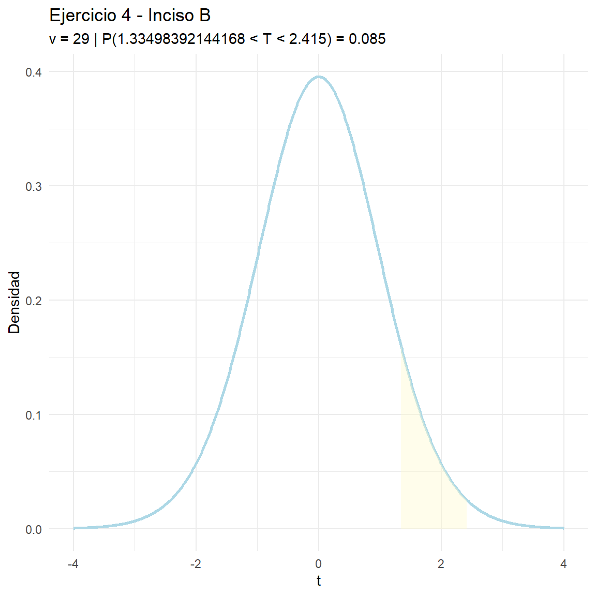
Ver código
plot_t_final(df = v_df, region ="between", value1 =-k_c, value2 = k_c, prob_val =0.92, title ="Ejercicio 4 - Inciso C")
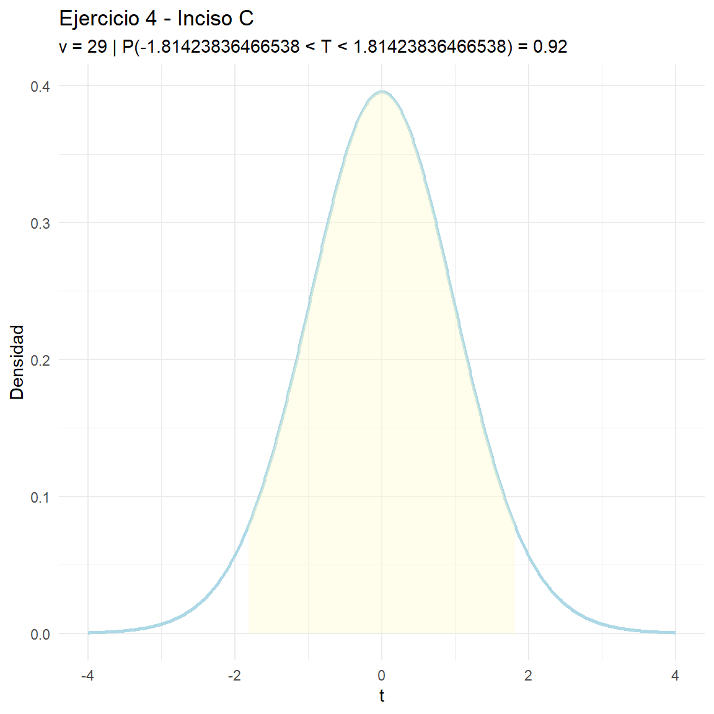
5 .Distribución F de Fisher
La distribución F, también conocida como F de Fisher-Snedecor, es una distribución de probabilidad continua que surge a partir de la razón entre dos variables aleatorias chi-cuadrado normalizadas por sus grados de libertad.
Definición formal
Si:
X \sim \chi^2_{v_1} (una chi-cuadrado con v_1 grados de libertad),Y \sim \chi^2_{v_2} (otra chi-cuadrado con v_2 grados de libertad), yX y Y son independientes,
Entonces la variable:
F = \frac{X/v_1}{Y/v_2} Sigue una distribución F con (v_1, v_2) grados de libertad.
Propiedades principales:
Soporte: F > 0, es decir, solo toma valores positivos.
Asimétrica: La curva de densidad es sesgada a la derecha, especialmente para pocos grados de libertad.
5.Cuando los grados de libertad son grandes, la distribución F tiende a concentrarse cerca de 1.
Usos más comunes:
1.Análisis de Varianza (ANOVA): Se utiliza para contrastar si varias medias poblacionales son iguales.
2.Pruebas de hipótesis sobre varianzas: Por ejemplo, para comparar si dos poblaciones tienen varianzas iguales.
3.Regresión lineal: La prueba F sirve para evaluar la significancia global del modelo.Familia de Curvas F de Fisher.
Familia de Curvas F de Fisher
Ver código
x <-seq(0, 5, length.out =500)df_combinations <-list(c(1, 5),c(2, 10),c(5, 10),c(10, 20))df <-data.frame()for (df_pair in df_combinations) { v1 <- df_pair[1] v2 <- df_pair[2] dens <-df(x, df1 = v1, df2 = v2) # función de densidad de la distribución F df <-rbind(df, data.frame(x = x, y = dens,label =paste0("v1=", v1, ", v2=", v2)))}ggplot(df, aes(x = x, y = y, color = label)) +geom_line(size =1) +labs(title ="Familia de curvas de la distribución F", x ="x", y ="Densidad",color ="Grados de libertad") +theme_minimal(base_size =14)
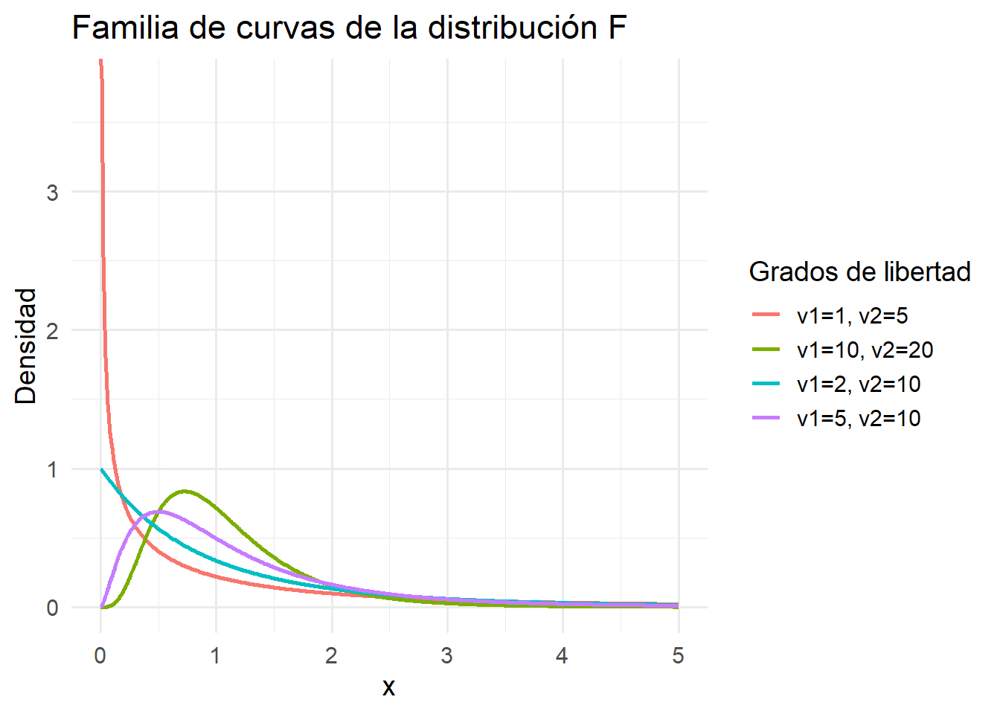
Ejercicio 5
Para una distribución F, se solicita encontrar los valores críticos para distintos niveles de significancia (\alpha) y grados de libertad (v_1, v_2):
f_{0.05} con v_1 = 9 y v_2 = 18.
f_{0.01} con v_1 = 12 y v_2 = 10.
f_{0.10} con v_1 = 20 y v_2 = 25.
f_{0.95} con v_1 = 16 y v_2 = 30.
f_{0.99} con v_1 = 35 y v_2 = 14.
Solución de Incisos
Código
Ver código
# 1. Cálculos de los valores críticos (Ejercicio 5)f_a <-qf(0.05, df1 =9, df2 =18, lower.tail =FALSE)f_b <-qf(0.01, df1 =12, df2 =10, lower.tail =FALSE)f_c <-qf(0.10, df1 =20, df2 =25, lower.tail =FALSE)f_d <-qf(0.95, df1 =16, df2 =30, lower.tail =FALSE)f_e <-qf(0.99, df1 =35, df2 =14, lower.tail =FALSE)# 2. Creación del data frame organizadotabla_f <-data.frame(Inciso =c("a", "b", "c", "d", "e"),Alpha =c(0.05, 0.01, 0.10, 0.95, 0.99),v1 =c(9, 12, 20, 16, 35),v2 =c(18, 10, 25, 30, 14),Valor_F_Critico =round(c(f_a, f_b, f_c, f_d, f_e), 4))# 3. Generación de la tabla con kableExtratabla_f %>%kbl(caption ="Valores Críticos: Distribución F de Fisher (Ejercicio 5)",align ="c",col.names =c("Inciso", "Probabilidad (α)", "v1 (Numerador)", "v2 (Denominador)", "Valor F Crítico")) %>%kable_styling(bootstrap_options =c("striped", "hover", "condensed", "responsive"),full_width = F,position ="center") %>%column_spec(1, bold = T, border_right = T) %>%column_spec(5, bold = T, color ="white", background ="#09363d")
Valores Críticos: Distribución F de Fisher (Ejercicio 5)
El Teorema del Límite Central (TLC) es uno de los conceptos más importantes en estadística. En términos simples, establece que la distribución de la media de una muestra se aproxima a una distribución normal a medida que el tamaño de la muestra aumenta, sin importar la forma de la distribución original de la población.
Concepto y Analogía
Imagina que tienes una población con una distribución extraña, por ejemplo, muy sesgada. Si tomas una sola muestra grande de esa población y calculas su media, esa media se comportará de manera predecible. Si repites este proceso muchas veces, las medias de todas esas muestras formarán un histograma que se parecerá cada vez más a una curva de campana (la distribución normal).
Una analogía popular es la de los dados. La distribución de probabilidad de un solo dado es uniforme (cada número tiene la misma probabilidad). Sin embargo, si lanzas muchos dados y sumas sus resultados, la distribución de esas sumas se aproximará a una campana, con los resultados centrales (la media) siendo mucho más probables que los extremos.
Puntos Clave del Teorema
Forma de la Distribución de Muestreo: La distribución de las medias de la muestra se vuelve normal, sin importar si la población original era normal, sesgada, uniforme o de cualquier otra forma.
Tamaño de la Muestra (n): La aproximación a la normalidad es más precisa a medida que el tamaño de la muestra (n) aumenta. Generalmente, una muestra de n \geq 30 es considerada suficiente para que la aproximación sea válida.
Relación con la Media de la Población: La media de la distribución de muestreo de las medias (\mu_{\bar{x}}) es igual a la media de la población (\mu):
\mu_{\bar{x}} = \mu
Relación con la Desviación Estándar de la Población: La desviación estándar de la distribución de muestreo de las medias, llamada error estándar (\sigma_{\bar{x}}), es igual a la desviación estándar de la población (\sigma) dividida por la raíz cuadrada del tamaño de la muestra (n):
\sigma_{\bar{x}} = \frac{\sigma}{\sqrt{n}}
Esto significa que, a medida que el tamaño de la muestra aumenta, el error estándar disminuye, y las medias de las muestras se agrupan más estrechamente alrededor de la media de la población.
Importancia
El Teorema del Límite Central es fundamental porque permite utilizar la distribución normal (que es fácil de trabajar) para hacer inferencias sobre la media de la población, incluso cuando no se conoce la distribución de la población original. Esto es la base para muchas pruebas estadísticas, como los intervalos de confianza y las pruebas de hipótesis.
Simulación para la distribución Binomial
Distribución Binomial original
Ver código
k <-8# Número de ensayos de la binomialp <-0.4# Probabilidad de éxitopoblacion <-data.frame(x =0:k,probabilidad =dbinom(0:k, size = k, prob = p))ggplot(poblacion, aes(x = x, y = probabilidad)) +geom_bar(stat ="identity", fill ="lightgreen", alpha =0.8) +labs( title ="Distribución Binomial Original", x ="Número de Éxitos", y ="Probabilidad" ) +theme_minimal()
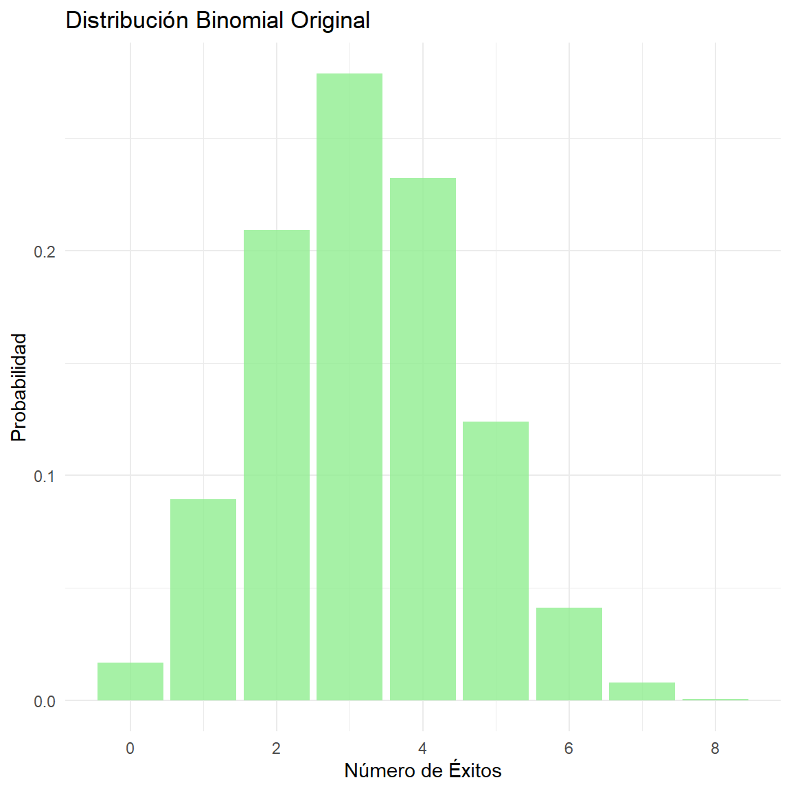
Distribución de las Medias Muestrales
Ver código
set.seed(123)k <-8# Número de ensayos de la binomialp <-0.4# Probabilidad de éxiton <-30# Tamaño de la muestraR <-10000# Número de repeticionesmedias_muestrales <-replicate(R, { muestra <-rbinom(n, size = k, prob = p)mean(muestra)})df_medias <-data.frame(media = medias_muestrales)ggplot(df_medias, aes(x = media)) +geom_histogram(aes(y =after_stat(density)), bins =30, fill ="lightgreen", color ="white", alpha =0.8) +stat_function(fun = dnorm, args =list(mean =mean(df_medias$media), sd =sd(df_medias$media)), color ="salmon", size =1.5, linetype ="dashed") +labs( title ="Distribución de las Medias Muestrales", x ="Media de la Muestra", y ="Densidad") +theme_minimal()
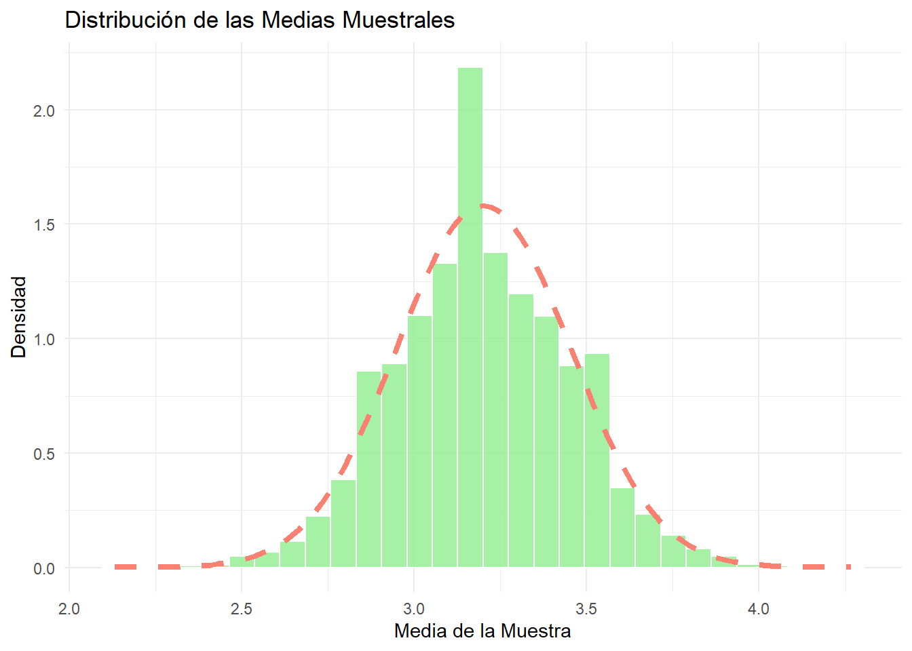
Simulacion para la distribucion de Poisson
Distribucion de Poisson original
Ver código
set.seed(123)lambda <-4original_dist <-data.frame( x =0:15, probability =dpois(0:15, lambda = lambda))ggplot(original_dist, aes(x = x, y = probability)) +geom_bar(stat ="identity", fill ="indianred", width =0.5) +labs( title ="Distribucion de Poisson origianal", x ="Number of Events", y ="Probability") +theme_minimal()
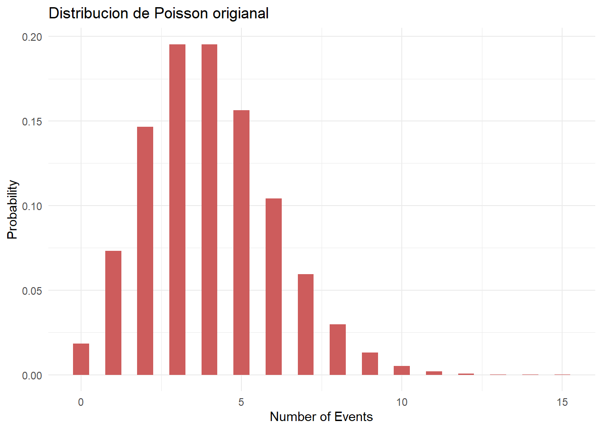
Distribucion de las medias muestrales
Ver código
n <-40R <-10000sample_means <-replicate(R, { sample_data <-rpois(n, lambda = lambda)mean(sample_data)})df_sample_means <-data.frame(mean = sample_means)ggplot(df_sample_means, aes(x = mean)) +geom_histogram(aes(y =after_stat(density)), bins =30, fill ="indianred", color ="white", alpha =0.8) +stat_function(fun = dnorm, args =list(mean =mean(df_sample_means$mean), sd =sd(df_sample_means$mean)), color ="darkslateblue", size =1.2, linetype ="dashed") +labs( title ="Distribución de las Medias Muestrales", x ="Sample Mean", y ="Density" ) +theme_minimal()
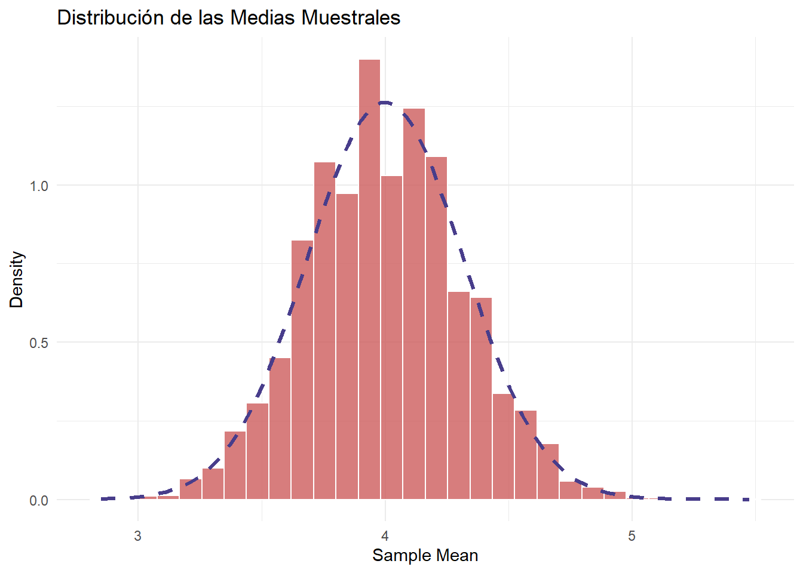
Simulacion para la distribucion Hipergeometrica
Distribucion Hipergeometrica original
Ver código
N <-2000# Tamaño de la poblaciónK <-200# Número de éxitos en la poblaciónn <-40# Tamaño de la muestraoriginal_dist <-data.frame( exitos =0:n, probabilidad =dhyper(x =0:n, m = K, n = N - K, k = n))ggplot(original_dist, aes(x = exitos, y = probabilidad)) +geom_bar(stat ="identity", fill ="purple", width =0.5) +labs( title ="Distribución Hipergeométrica Original", x ="Número de Éxitos en la Muestra", y ="Probabilidad" ) +theme_minimal()
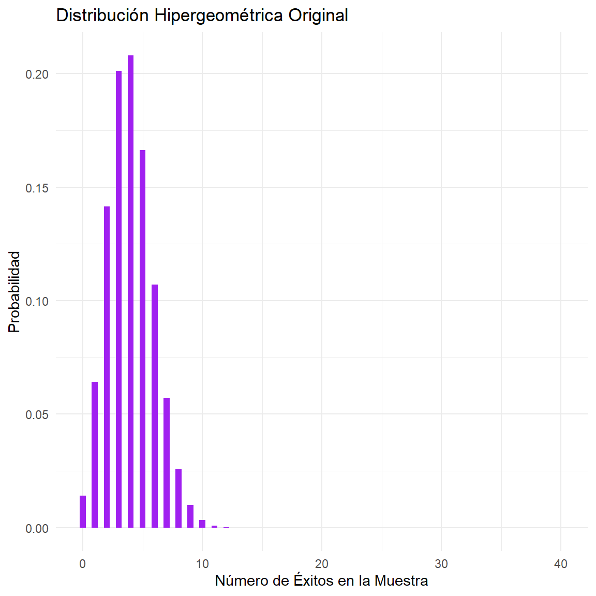
Distribucion de las medias muestrales
Ver código
set.seed(123)n <-250# Tamaño de la muestraR <-1000000# Número de repeticionesmedias_muestrales <-replicate(R, { exitos_muestra <-rhyper(nn =1, m = K, n = N - K, k = n) exitos_muestra / n})df_medias <-data.frame(media = medias_muestrales)ggplot(df_medias, aes(x = media)) +geom_histogram(aes(y =after_stat(density)), bins =30, fill ="purple", color ="white", alpha =0.8) +stat_function(fun = dnorm, args =list(mean =mean(df_medias$media), sd =sd(df_medias$media)), color ="darkslateblue", size =1.2, linetype ="dashed") +labs( title ="Distribución de las Medias Muestrales", x ="Media de la Muestra", y ="Densidad" ) +theme_minimal()
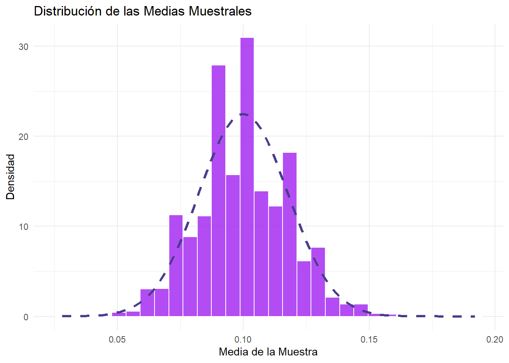
Simulacion para la distribucion Exponencial
Distribucion exponencial original
Ver código
# Parámetro de la exponencial (lambda)lambda <-0.5# Generar datos para la curva teóricax_exp <-seq(0, 10, length.out =200)poblacion_exp <-data.frame(x = x_exp, probabilidad =dexp(x_exp, rate = lambda))ggplot(poblacion_exp, aes(x = x, y = probabilidad)) +geom_area(fill ="cadetblue", alpha =0.8) +geom_line(color ="khaki", linewidth =1) +labs(title ="Distribución Exponencial Original", x ="x", y ="Densidad de Probabilidad") +theme_minimal()
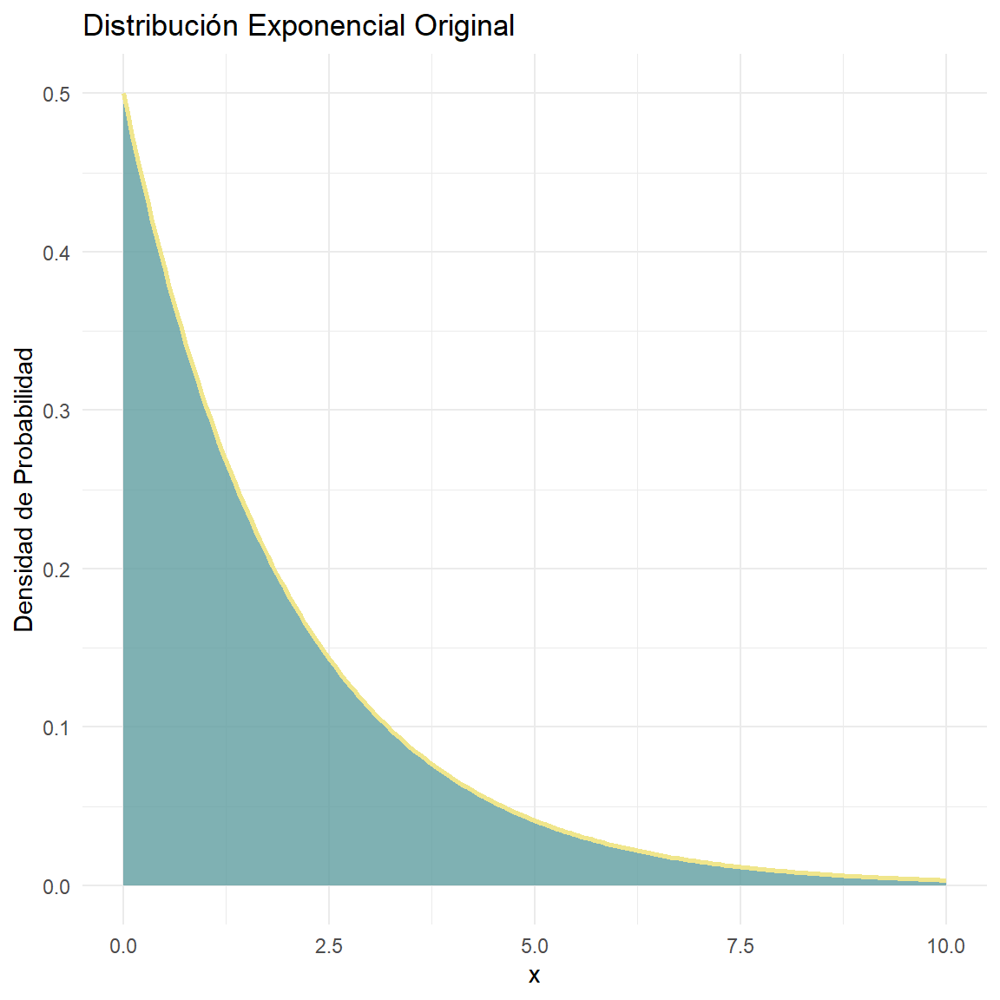
Distribucion de las medias muestrales
Ver código
set.seed(123)lambda <-0.5# Parámetro de la poblaciónn <-30# Tamaño de la muestra (n >= 30 para TLC)R <-10000# Número de repeticiones# Simulación de las mediasmedias_muestrales_exp <-replicate(R, { muestra <-rexp(n, rate = lambda)mean(muestra)})df_medias_exp <-data.frame(media = medias_muestrales_exp)# Gráfico con histograma y curva normal teóricaggplot(df_medias_exp, aes(x = media)) +geom_histogram(aes(y =after_stat(density)), bins =30, fill ="cadetblue", color ="white") +stat_function(fun = dnorm, args =list(mean =mean(df_medias_exp$media), sd =sd(df_medias_exp$media)), color ="khaki", linetype ="dashed", linewidth =1) +labs(title ="Distribución de las Medias Muestrales (Base Exponencial)",x ="Media de la Muestra",y ="Densidad") +theme_minimal()
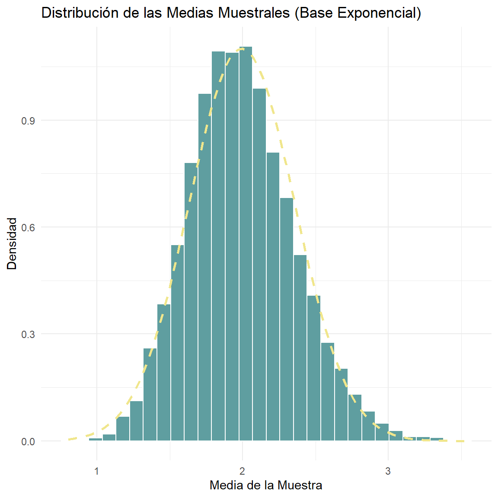
Simulador (Shuny)
Ver código
library(shiny)library(ggplot2)# --- INTERFAZ DE USUARIO ---ui <-fluidPage(headerPanel("Explorador del Teorema del Límite Central"),sidebarLayout(sidebarPanel(selectInput("dist", "Seleccione la Distribución:",choices =c("Binomial", "Poisson", "Hipergeométrica", "Uniforme", "Exponencial")),hr(),sliderInput("n", "Tamaño de la muestra (n):", min =2, max =100, value =30),sliderInput("reps", "Número de repeticiones (R):", min =1000, max =15000, value =10000, step =1000),actionButton("run", "Ejecutar Simulación", icon =icon("play"), style="color: #fff; background-color: #09363d; border-color: #09363d") ),mainPanel(tabsetPanel(tabPanel("Población Original", plotOutput("plotPob"),helpText("Esta es la distribución base de la población.")),tabPanel("Distribución de Medias (TLC)", plotOutput("plotTLC"),helpText("La curva roja representa la distribución normal teórica.")) ) ) ))# --- LÓGICA DEL SERVIDOR ---server <-function(input, output) {# Definición de la paleta de colores sincronizada colores <-reactive({switch(input$dist,"Binomial"="#90EE90", # Verde claro"Poisson"="#87CEEB", # Azul cielo"Hipergeométrica"="#FFB347", # Naranja"Uniforme"="#BA55D3", # Púrpura"Exponencial"="#20B2AA") # Verde mar })# Generar datos de la población getPobData <-reactive({set.seed(123) dist <- input$distif(dist =="Binomial") return(rbinom(5000, size =10, prob =0.4))if(dist =="Poisson") return(rpois(5000, lambda =3))if(dist =="Hipergeométrica") return(rhyper(5000, m =20, n =30, k =10))if(dist =="Uniforme") return(runif(5000, min =0, max =10))if(dist =="Exponencial") return(rexp(5000, rate =0.5)) })# Gráfico de la Población output$plotPob <-renderPlot({ datos <-data.frame(x =getPobData()) color_f <-colores() p <-ggplot(datos, aes(x = x)) +labs(title =paste("Distribución", input$dist, "Original"),x ="Valores de la Variable", y ="Frecuencia") +theme_minimal(base_size =14)if(input$dist %in%c("Binomial", "Poisson", "Hipergeométrica")) { p +geom_bar(fill = color_f, color ="white", alpha =0.8) } else { p +geom_histogram(fill = color_f, color ="white", alpha =0.8, bins =30) } })# Simulación de las Medias Muestrales sim_data <-eventReactive(input$run, { dist <- input$dist n <- input$n R <- input$repsset.seed(123) medias <-replicate(R, { muestra <-switch(dist,"Binomial"=rbinom(n, size =10, prob =0.4),"Poisson"=rpois(n, lambda =3),"Hipergeométrica"=rhyper(n, m =20, n =30, k =10),"Uniforme"=runif(n, min =0, max =10),"Exponencial"=rexp(n, rate =0.5))mean(muestra) })data.frame(media = medias) }, ignoreNULL =FALSE)# Gráfico del TLC output$plotTLC <-renderPlot({ df <-sim_data() color_f <-colores()ggplot(df, aes(x = media)) +geom_histogram(aes(y =after_stat(density)), bins =35, fill = color_f, color ="white", alpha =0.7) +stat_function(fun = dnorm, args =list(mean =mean(df$media), sd =sd(df$media)), color ="red", linetype ="dashed", linewidth =1.2) +labs(title =paste("Medias Muestrales (n =", input$n, ")"),subtitle ="La línea roja muestra la tendencia a la Normalidad",x ="Valor de la Media", y ="Densidad") +theme_minimal(base_size =14) })}shinyApp(ui = ui, server = server)
Shiny applications not supported in static R Markdown documents